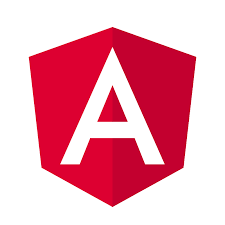

Sobre Mim
Sou Analista de Sistemas com ampla experiência como Desenvolvedor Sênior, atuando em todas as etapas do ciclo de vida de sistemas, desde a concepção técnica até a entrega contínua. Tenho sólida experiência em integrações via APIs REST e SOAP e forte atuação em ambientes corporativos que demandam escalabilidade, segurança e uma excelente experiência do usuário.
Ao longo da carreira, trabalhei com TL++, ADVPL e Angular em sistemas de grande porte, além de atuar em equipes ágeis, participando desde entrevistas com stakeholders até code reviews e entregas contínuas. Valorizo código limpo, desacoplado e reutilizável, sempre alinhado às melhores práticas de engenharia de software.
Atualmente, estou expandindo minha stack com foco em Java (Spring Boot), Node.js, Express e React, além de aplicar práticas modernas como CI/CD com GitHub Actions, testes automatizados e deploy em cloud (GCP e AWS).
Concluí recentemente uma pós-graduação em Desenvolvimento Full Stack na FIAP, onde desenvolvi projetos práticos envolvendo autenticação JWT, microsserviços, deploy automatizado e versionamento com Git. Entre os destaques está uma aplicação com chatbot inteligente utilizando IA generativa via API da OpenAI, capaz de realizar atendimentos automatizados com interação natural com o usuário.
Sou Bacharel em Sistemas de Informação pela UMC, pós-graduado em Sistemas de Gestão Empresarial ERP pela AVM e em Full Stack Development pela FIAP.
Principais Competências
- ADVPL | TL++: Desenvolvedor Full Stack na TOTVS
-  Angular | POUI: Desenvolvedor Full Stack na TOTVS
-
 SQL Server | Oracle | Postgres:
Desenvolvedor Full Stack na TOTVS
SQL Server | Oracle | Postgres:
Desenvolvedor Full Stack na TOTVS
- Java: PosTech Full Stack na FIAP
- Nodejs: PosTech Full Stack na FIAP
-
 React:
PosTech Full Stack na FIAP
React:
PosTech Full Stack na FIAP
-
 MongoDB:
PosTech Full Stack na FIAP
MongoDB:
PosTech Full Stack na FIAP